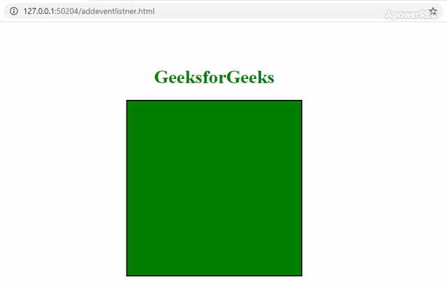

TECHNICAL BLOG
Javascript Fundamentals
1. The Power Front - End Trio: HTML, CSS and Javascript
For starters HTML, CSS and Javascript are the languages responsible for what we see as we land on different websites while surfing the internet.
I really liked the analogy that my friend Google showed me about these three. It says that HTML is the builder, CSS is the artist and JavaScript is the wizard. Here’s a basic description of what each does:
- HTML (“Hypertext Markup Language”) is responsible for the basic structure of a webpage. In simple terms, we use HTML to put elements like headings, paragraphs, texts, images, links, etc. in the order that we want to. It’s like writing a formal letter.
- CSS (“Cascading Style Sheets”) is responsible for the design aspect of a webpage. Like an artist, it makes a webpage colorful by adding visual effects and background color. It can also customize the elements in the HTML as well as affect its structure.
- JavaScript is responsible for basically anything you can imagine you can do in a webpage. This is why it is likened to a wizard that can do MAGIC! It makes web pages dynamic by applying interactive behavior like having a certain kind of animation when you click something. It is also used to build applications and even games. And just like magic it takes effect instantly without the need to refresh the page.
2. Control Flow and Loops
Control Flow is the technical term for specifying the sequence in which a code executes. (https://codeinstitute.net/global/blog/control-flow-in-javascript/)
Simply put number 1, it is what happens behind the scenes when you interact with a software or program like when you click or press a key.
Simply put number 2, it is how the code runs after you fire a signal by clicking or pressing something in the web page.
Originally, code runs in a top-down manner unless you define its course with structures such as Functions, Conditionals and Loops:
- Functions are a set of statements that indicate a procedure which you can use repeatedly. For example, everytime a visitor enters your door you greet them by saying “Good day, (First name)” and when they leave “Good bye, (First name)”. When compared with everyday life, functions refer to how we do our chores. For example, when you cook there are different steps like start a fire, add salt, add meat or add water. Each of these are functions that can be called in any order we want to. Be mindful of the sequence or else you skip dinner!
- Conditionals, well from the term “condition”, refers to a flow structure that involves choices or selection. For example, while cooking there comes a part when you check for the taste. Here, there are two possible actions you can do to proceed depending whether the preferred taste is met:
- Loops refer to replaying or repeating the same action, in this case, running the same block of code until you set the condition to stop. So, imagine you are still doing the same cooking. From time to time you are checking the taste and adding salt or water as per conditions. Then, you are looping through the tasting and adding until you are satisfied with the taste which breaks the loop.
a. If it is bland, add salt, or
b. If it is salty, add water.
3. Describe what the DOM is and an example of how you might interact with it.
The Document Object Model is a data structure that represents the page you see in your browser. It is a copy of the page’s HTML but represented as a JavaScript object. Here you can select HTML elements, execute events, methods and add properties such as style. One way you can interact with it is by creating events to make your web page interactive. See pictures below:
4. Explain the difference between accessing data from arrays and objects.
Arrays are lists of items or values under a single name. The syntax is ArrayName = [ item1, item2, item3,... ].
E.g. Filipino Food = [ Adobo, Balut, Lechon, Bulalo ]
You can access an item from an array by referring to the index number. Index number is the position of the item in the array which starts at [0].
E.g. Filipino Food = [ Adobo, Balut, Lechon, Bulalo ] [ 0, 1, 2, 3 ]
So, if I my favorite is Balut, i’d put:
Let favorite = Filipino Food[1], which equates to
Favorite = “Balut”
Objects are variables but can contain many values which are called properties. The properties are written as name:value pairs (name and value separated by a colon).
E.g. phone = { brand: “Samsung”, model: “Flip5”, color: “black”, year: 2023 }
You can access object properties in two ways:
- Using dot(.) E.g. phone.brand
- Using square brackets ([ ]) E.g. phone[“brand”]
console.log = Samsung
console.log = Samsung
5. Explain what functions are and why they are helpful.
See explanation